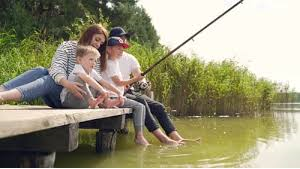

En PescAR en Linea encontraras todo lo que necesitas para disfrutar de la Pesca en Argentina Podes encontrar los mejores lugares para ir a Pescar de todo el pais, junto con las experiencias y recomendaciones de los pescadores profesionales y aficionados a esta pasion. En PescAR en Linea tendras la posibilidad de conseguir lugares de Hospedaje para pesca deportiva o familiar, tambien, encontraras los mejores productos exclusivos y de la mejor calidad.
